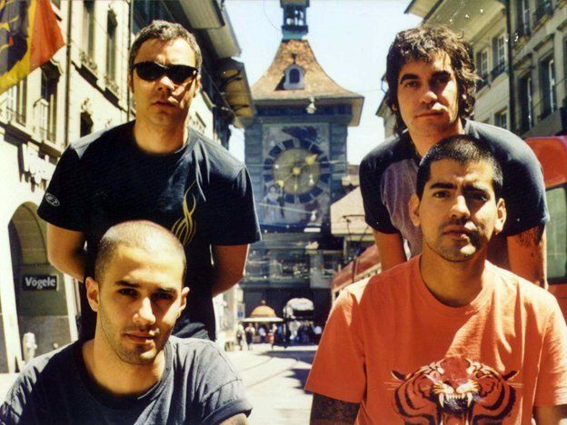

Todas las canciones que hacen, tienen un marcado estilo punk y letras con contenidos "proletarios" (denunciando la injusticia social que sufrían los obreros de las fabricas). Poco a poco van incorporando otras influencias: Sex Pistols, Clash, Damned, bandas características de el punk inglés del '77. A partir de Cabeza de Navaja surgen canciones como "Gil", "Sola en la cancha" y "Crimen Perfecto".A mediados de 1987 logran conseguir una presentación en Metamorfosis, un pub del Abasto, en Buenos Aires, en un día donde a la vez tocan tambien bandas blusers y punks. Sin embargo, no pudieron terminar su primera presentación debido a que luego de tocar ocho temas fueron echados por el encargado del lugar, alegando la minoría de edad de Federico Pertusi. El mismo año graban su primer disco (aunque no es oficial), denominado Yo te amo. El cd contiente algunas canciones propias y algunos covers. Este cd nunca es sacado a la venta. Solo lo tienen los integrantes de la banda y sus amigos. Logicamente que la calidad de sonido no es buena debido a que ninguna discográfica participa en esta creación. En este cd se destaca la participación y creatividad de los hermanos Pertusi. A principios de 1988 logran presentarse como banda soporte de la banda Descontrol, nada más y nada menos que en Cemento. Esto se vio posible debido a que uno de los integrantes de la banda descontrol escucho un cassete de uno de los ensayos de la banda y le simpatizó. Luego, en el transcurso del año continúan presentándose en pubs, hasta que obtienen dinero suficiente para grabar algunas de sus canciones en un estudio profesional. Registran algunos temas sin saber que, en la sala de al lado, los responsables del reconocido sello "Radio Trípoli" estan preparando el disco Invasión 88, un compilado de grupos punks locales. Estos les gusta la música de Attaque y el director de la companía, Sergio Fassinelli, los invita a grabar con ellos y así es como quedan registradas por primera vez en un cd profesional las canciones "Brigada anti-disturbios" y "Sola en la cancha". Estas canciones son las más destacadas de el compilado, por lo que el mismo sello discográfico les ofrece la oportunidad de grabar un compact de larga duración. Danio y Leiva renuncian al proyecto, pero paralelamente se incorpora Leonardo De Cecco, baterista de Los Siete Delfines. Ahora como cuarteto (Ciro en bajo, Mariano Martínez en guitarra, Federico Pertusi en voz y Leonardo De Cecco en batería), grabaron Dulce Navidad (a finales de 1988 y sale a la venta en el 89). Este cd es el primer disco oficial de la banda, el proyecto inicial era grabar un lado del disco en vivo para rescatar plenamente la energía de la banda, pero finalmente el productor de la discográfica, Michel Peyronel, selecciona siete canciones todas grabadas en distintos estudios. Luego de esta primera placa, se aleja definitivamente de la banda uno de los Pertusi, Federico. Ante esta ida, Ciro se transforma en el vocalista de la banda (ya había cantado "Sola en la cancha") y se incorpora al grupo Adrián "Chino" Vera como bajista.Con esta formación editan en 1990 el segundo disco, bajo el título de El cielo puede esperar, cuyos temas más destacados son "Más de un millón", "El cielo puede esperar", "Tiempo para estar" y "Hacelo por mí". Este último tema lo impulsa a la banda a hacerse conocida a nivel nacional a través del homónimo programa de televisión conducido por conducía Mario Pergolini. Este programa también hace que posteriormente la banda firme con una prestigiosa discográfica internacional. Luego de realizar en 1991 algunos recitales por Buenos Aires y sus alrededores, graban a través de dos funciones en Obras realizadas en Noviembre, un álbum en vivo denominado Rabioso! La pesadilla recién comienza. Este cd, es sin duda el peor compact de la banda debido a la pauperrima calidad de sonido que tiene. Para fines este año telonean en Velez a Rata Blanca. El año posterior, 1992, graban Angeles caídos . Este compact demostraba gran madurez de la banda y la potencia para tocar sus canciones. Las letras además mantienen la temática de los problemas cotidianos y de la injusticia social: la falta de trabajo, el maltrato hacia los jubilados, los chcios abandonados, entre otros temas. El mismo año realizan 30 shows en 4 meses, por todo el país en su primera gira nacional con prestigio. Luego se proponen a hacer dos recitales como presentación oficial del último compact. Antes de estas presentaciones, el bajista (el "chino" Vera) decide dejar la banda y como consecuencia de su desición lo remplaza Luciano Scaglione.
